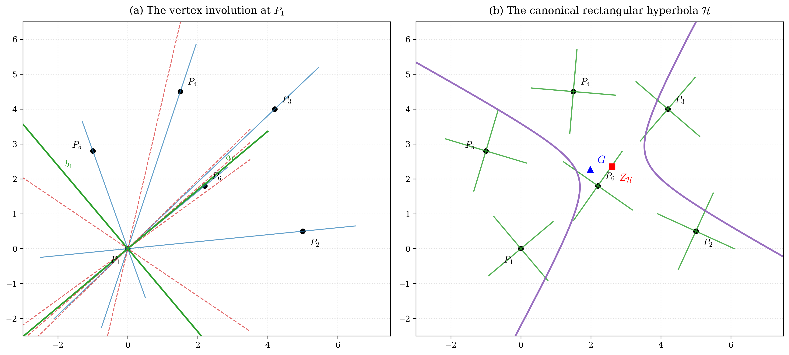
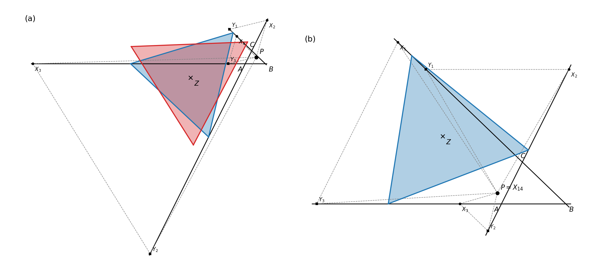
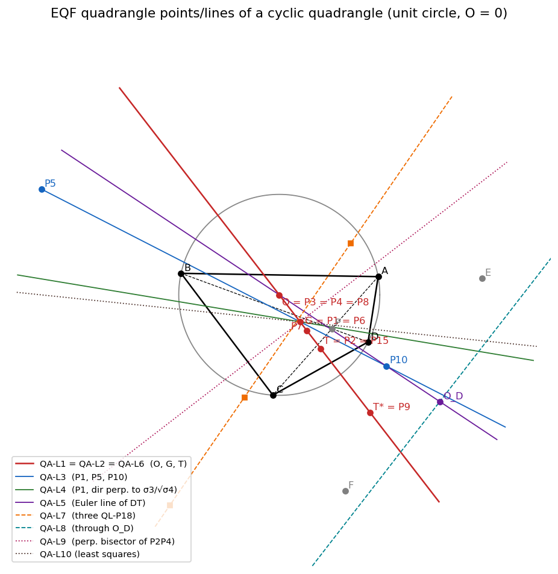
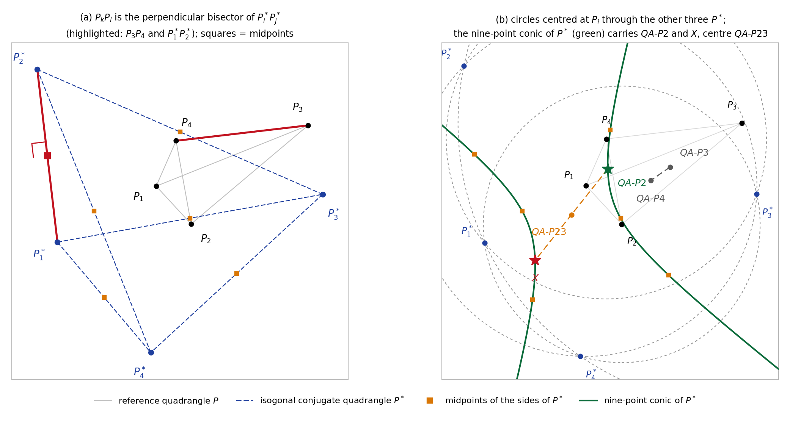
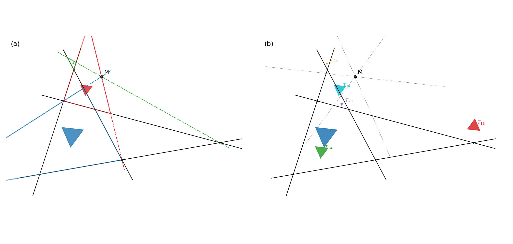

I am a mathematician and researcher specializing in classical and modern plane and projective geometry,
specifically the algebraic and synthetic structure of $n$-point and $n$-line configurations, conic envelopes,
projective involutions, and invariant geometric systems.
I obtained my Ph.D. in Applied Mathematics and Telecommunications from
Télécom ParisTech (Paris, France), advised by Prof. Laurent Decreusefond and Prof. Philippe Martins,
focusing on stochastic spatial models, point processes, and dimensioning of cellular networks.
Key mathematical directions and structural investigations.
Δ
6-Point Configurations & Conics
Investigating the projective and affine properties of 6 general points ($6P$), including the polar envelope
conic $\mathcal{E}_Q$, the vertex involution $\mathcal{J}$, canonical equilateral hyperbolas, and cubic Cremona transformations.
Structure of complete quadrangles ($QA$) and complete quadrilaterals ($QL$), including isogonal conjugacy,
orthology, Miquel configurations, and invariant circles such as the Tulip circle and pedal reflection circles.
Generalizations of Droz-Farny lines, median-orthologic and median-parallelogic triangles,
and their high-dimensional extensions to simplexes in $\mathbb{R}^n$ using barycentric and vector calculus.
Droz-Farny theoremMedian-orthologySimplexes in $\mathbb{R}^n$Perspective centers
∂
Stochastic Geometry & Cellular Networks
Spatial modeling of wireless communication networks via Poisson point processes and Voronoi tessellations.
Analytical evaluation of outage, handover probabilities, and energy optimization in cellular topologies.
Poisson point processesVoronoi tessellationEnergy optimizationHandover probability
Featured Preprint
Recent breakthrough in six-point projective configuration theory.
Preprint (2026)
The Vertex Involution and Canonical Conics of General Six-Point Configurations
Vu Thanh Tung • October 2026 • 12 pages with figures & proofs
For any six general points $A_1, \dots, A_6$ in the projective plane, consider the six 5-point conics $\mathcal{C}_i$
passing through all points except $A_i$. For any point $Q$, their polar lines $\ell_i$ are proven to touch a single envelope
conic $\mathcal{E}_Q$. When $Q$ is evaluated at a vertex $A_i$, the envelope conic degenerates into a pair of lines meeting
at a point $A_i'$. We prove that the correspondence $A_i \mapsto A_i'$ is an involution on the configuration, and determine
its explicit algebraic representation and connections to classical cubic Cremona transformations.
@article{vu2022106,
title={106.35 On the representation of rational numbers in the form},
author={Vu, Thanh Tung},
journal={The Mathematical Gazette},
volume={106},
number={567},
pages={504--505},
year={2022},
publisher={Cambridge University Press}
}
Median-parallelogic and median-orthologic triangles
2021
Vu, Thanh Tung
The Mathematical Gazette, Vol. 105, No. 562, pp. 136–139 (Cambridge University Press)
@article{vu2014analytical,
title={An analytical model for evaluating outage and handover probability of cellular wireless networks},
author={Vu, Than-Tung and Decreusefond, Laurent and Martins, Philippe},
journal={Wireless personal communications},
volume={74},
number={4},
pages={1117--1127},
year={2014},
publisher={Springer US Boston}
}
Energy modeling and optimization of radio access network using stochastic deployment models
2014
Vu, Thanh Tung, Mamdouh El Tabach, and Taoufik En-Najjary
2014 IEEE International Conference on Communications Workshops (ICC), pp. 895–900 (IEEE)
@inproceedings{vu2014energy,
title={Energy modeling and optimization of radio access network using stochastic deployment models},
author={Vu, Thanh Tung and El Tabach, Mamdouh and En-Najjary, Taoufik},
booktitle={2014 IEEE International Conference on Communications Workshops (ICC)},
pages={895--900},
year={2014},
organization={IEEE}
}
Statistical power consumption assessment of mobile access networks at country level
2014
Vu, Thanh Tung, Mamdouh El Tabach, Taoufik En-Najjary, and Azeddine Gati
European Wireless 2014; 20th European Wireless Conference, pp. 1–6 (VDE)
@inproceedings{vu2014statistical,
title={Statistical power consumption assessment of mobile access networks at country level},
author={Vu, Thanh Tung and El Tabach, Mamdouh and En-Najjary, Taoufik and Gati, Azeddine},
booktitle={European Wireless 2014; 20th European Wireless Conference},
pages={1--6},
year={2014},
organization={VDE}
}
Modeling energy consumption in cellular networks
2013
Laurent Decreusefond, Vu, Thanh Tung, and Philippe Martins
Proceedings of the 2013 25th International Teletraffic Congress (ITC), pp. 1–7 (IEEE)
@inproceedings{decreusefond2013modeling,
title={Modeling energy consumption in cellular networks},
author={Decreusefond, Laurent and Vu, T Tung and Martins, Philippe},
booktitle={Proceedings of the 2013 25th International Teletraffic Congress (ITC)},
pages={1--7},
year={2013},
organization={IEEE}
}
Laurent Decreusefond, Eduardo Ferraz, Philippe Martins, and Vu, Thanh Tung
6th International ICST Conference on Performance Evaluation Methodologies and Tools (VALUETOOLS), pp. 74–82 (IEEE)
@inproceedings{decreusefond2012robust,
title={Robust methods for LTE and WiMAX dimensioning},
author={Decreusefond, Laurent and Ferraz, Eduardo and Martins, Philippe and Vu, Thanh-Tung},
booktitle={6th International ICST Conference on Performance Evaluation Methodologies and Tools},
pages={74--82},
year={2012},
organization={IEEE}
}
Energy consumption in cellular network: ON-OFF model and impact of mobility
2012
Vu, Thanh Tung, Laurent Decreusefond, and Philippe Martins
@article{vu2012energy,
title={Energy consumption in cellular network: ON-OFF model and impact of mobility},
author={Vu, Thanh Tung and Decreusefond, Laurent and Martins, Philippe},
journal={CoRR},
volume={abs/1204.4326},
year={2012}
}
An analytical model for evaluating outage and handover probability of cellular wireless networks
2010
Laurent Decreusefond, Philippe Martins, and Vu, Than-Tung
@article{decreusefond2010analytical,
title={An analytical model for evaluating outage and handover probability of cellular wireless networks},
author={Decreusefond, Laurent and Martins, Philippe and Vu, Than-Tung},
journal={arXiv preprint arXiv:1009.0193},
year={2010}
}
Proposal for a calculation procedure for flange dimensioning
1984
M. Podhorsky and T. Vu
VGB Kraftwerkstech., Vol. 64, No. 7
@article{podhorsky1984proposal,
title={Proposal for a calcualtion procedure for flange dimensioning},
author={Podhorsky, M and Vu, T},
journal={VGB Kraftwerkstech.;(Germany, Federal Republic of)},
volume={64},
number={7},
year={1984}
}
Geometry Gallery
Visualizations and computational figures from my research on configurations, conics, and quadrangles.

The 6-Point Vertex Involution $\mathcal{J}$
Given 6 general points $A_1, \dots, A_6$, the five-point conics $\mathcal{C}_i$ and their polar lines envelope
conics $\mathcal{E}_Q$. For vertices $A_i$, the envelope degenerates into pairs of lines whose intersections define
the involution partner $A_i' = \mathcal{J}(A_i)$ and associated canonical hyperbolas.

Equilateral Rotation & Perspective Conics
Geometric transformations generated by equilateral rotations, perspective triangle centers, and the envelopes
of perspective axes across family parameters.

Equilateral Quadrangle Family (EQF)
Loci of centers, inscribed circles, and dual envelopes in equilateral quadrangle systems, displaying symmetry groups
and invariant pencil behavior.

Isogonal Conjugacy in Quadrangles
Study of quadratic transformations and orthology in complete quadrangles, relating isogonal conjugates
to nine-point conics and pedal configurations.

Miquel-Morley Incentre Configuration
The interplay between complete quadrilateral in-circles, Miquel points, and Morley equilateral triangles,
demonstrating remarkable concurrent centers.
Contact & Collaboration
Feel free to reach out for research inquiries, geometric problem discussions, or preprint correspondence.
I am always happy to correspond with researchers, geometers, and students interested in configuration geometry,
conic systems, and mathematical problem-solving.